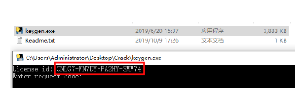
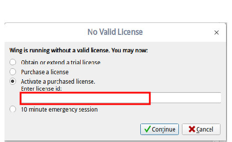
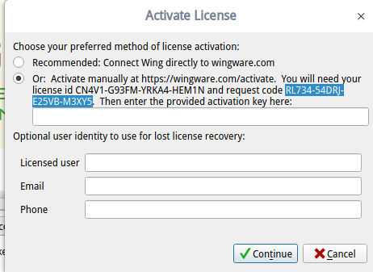
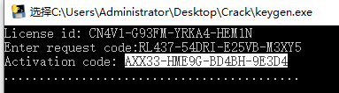

[Arch]-5-Arch常用软件推荐
引言
这边文章介绍Arch下比较好用的一些软件，包括VMware虚拟机、Python开发神器WingIDE、代码编辑神器Sublime、火狐浏览器、google浏览器、下载神器Uget+aria2、终端代理神器proxychains4、百度网盘、WPS套件，you-get视频下载器等，彻底将Arch打造成便于日常使用的利器。
文章目录
- 0×1.如何安装VMware
- 0×2.如何安装WingIDE
- 0×3.如何安装Sublime
- 0×4.如何安装火狐与Google浏览器
- 0×5.如何安装Uget+aria2下载器
- 0×6.如何安装局部代理神器proxychains4
- 0×7.如何安装百度网盘
- 0×8.如何安装WPS套件
- 0×9.如何安装you-get视频下载器
0×1.如何安装VMware
#1.安装VMware需要的依赖包 qing@qingsword.com:~$ sudo pacman -S fuse2 gtkmm linux-headers ncurses5-compat-libs libcanberra pcsclite #2.去www.vmware.com下载最新版VMware for Linux（下载下来后会是一个.bundle结尾的文件），放到终端所在目录，使用下面的命令安装 qing@qingsword.com:~$ sudo sh VMware-edition-version.release.architecture.bundle #3.安装完成之后，使用下面的命令启动图形界面 qing@qingsword.com:~$ vmware #4.输入序列号（每个版本的最新序列号，请留意本页更新） #VMware-Workstation-15序列号：YZ718-4REEQ-08DHQ-JNYQC-ZQRD0 #在Arch中，VMware服务不会随机启动，每次重启之后，需要使用下面的命令启动服务才能使用 qing@qingsword.com:~$ sudo /etc/init.d/vmware start
0×2.如何安装WingIDE
WingIDE已经被集成到AUR中，只需要几个简单操作就能够安装：
#AUR安装软件的方法前面文章已经介绍过，这里不再赘述 #1.克隆到本地 qing@qingsword.com:~$ git clone https://aur.archlinux.org/wingide.git #2.进入克隆目录 安装 qing@qingsword.com:~$ cd wingide && makepkg -si
WingIDE刚安装好后是30天试用版，可以按照下面的方法破解：
首先，大家在Windows系统中将这个keygen.exe注册机打开：WingIDE注册机下载地址提取密码: d2ah
复制你们打开的注册机里下图所示红框里面的序列号：
打开WingIDE，粘贴到下图所示的位置（点击continue之后如果提示序列号不正确，请关闭注册机重新打开，重新生成序列号）：
然后复制WingIDE生成的序列号：
粘贴到keygen.exe注册机中，得到最终的序列号，将这个序列号复制下来，填写到上面第一个文本框中即可完成破解：
0×3.如何安装Sublime
#1.克隆到本地 qing@qingsword.com:~$ git clone https://aur.archlinux.org/sublime-text-dev.git #2.安装 qing@qingsword.com:~$ cd sublime-text-dev && makepkg -si #3.修改hosts文件，方便后面输入破解序列号 qing@qingsword.com:~$ sudo vim /etc/hosts #4.输入下面的内容到文件最下面 127.0.0.1 www.sublimetext.com 127.0.0.1 sublimetext.com 127.0.0.1 sublimehq.com 127.0.0.1 license.sublimehq.com 127.0.0.1 45.55.255.55 127.0.0.1 45.55.41.223 0.0.0.0 license.sublimehq.com 0.0.0.0 45.55.255.55 0.0.0.0 45.55.41.223 #5.打开Sublime，打开Help菜单的Enter License，本文完成时最新版是3211，输入下面的序列号即可激活 ----- BEGIN LICENSE ----- Member J2TeaM Single User License EA7E-1011316 D7DA350E 1B8B0760 972F8B60 F3E64036 B9B4E234 F356F38F 0AD1E3B7 0E9C5FAD FA0A2ABE 25F65BD8 D51458E5 3923CE80 87428428 79079A01 AA69F319 A1AF29A4 A684C2DC 0B1583D4 19CBD290 217618CD 5653E0A0 BACE3948 BB2EE45E 422D2C87 DD9AF44B 99C49590 D2DBDEE1 75860FD2 8C8BB2AD B2ECE5A4 EFC08AF2 25A9B864 ------ END LICENSE ------ #如果版本有变化，百度一般搜对应的版本号能够搜到激活码。
0×4.如何安装火狐与Google浏览器
qing@qingsword.com:~$ sudo pacman -S firefox firefox-i18n-zh-cn chromium
0×5.如何安装Uget+aria2下载器
UGet是Linux下很好用的下载器，可以使用aria2作为后端，提供了一个很友好的UI界面，可以使用下面的命令安装：
#安装Uget+aria2插件，以及浏览器支持插件 qing@qingsword.com:~$ sudo pacman -S uget aria2 uget-integrator uget-integrator-chrome uget-integrator-chromium uget-integrator-firefox uget-integrator-opera
0×6.如何安装局部代理神器proxychains4
有时候使用终端时，需要去下载一些被墙的资源，但我们又不想使用系统全局socks代理，这个时候就能够用到proxychains4这款代理神器，请看下面的实例：
#proxychains4是AUR库中维护的软件，安装proxychains4 qing@qingsword.com:~$ git clone https://aur.archlinux.org/proxychains-ng-git.git qing@qingsword.com:~$ cd proxychains-ng-git qing@qingsword.com:~/proxychains-ng-git $ makepkg -si #使用方法 #1.首先修改proxychains配置文件 qing@qingsword.com:~$ vim /etc/proxychains.conf #2.在末尾添加一行socks5代理指向我们自定义23333端口，这样的配置之后，只要用proxychains启动某程序，就会让这个程序的所有数据都发往本机的23333端口 socks5 127.0.0.1 23333 #3.然后就可以使用ssh端口转发连接上自己境外服务器，例如，本地开启一个23333端口，链接到233.3.3.5这台主机的某个随机端口，凡是本机发往23333端口的socks5数据，都会转发给233.3.3.5这台主机，这台主机代替我们去访问目标后，将数据再转发回给我们 qing@qingsword.com:~$ ssh -qTnNf -D 23333 root@233.3.3.5 #4.使用proxychains4代理打开firefox qing@qingsword.com:~$ proxychains4 firefox &
0×7.如何安装百度网盘
百度网盘的Linux版已经被Arch官方源收录，直接可以通过pacman安装：
qing@qingsword.com:~$ sudo pacman -S baidunetdisk
0×8.如何安装WPS套件
在AUR中有好几个版本的WPS套件，个人建议安装wps-office-cn这个版本，这个版本编译好后，还带一个中文汉化包，安装后就是全中文界面：
#1.克隆到本地 qing@qingsword.com:~$ git clone https://aur.archlinux.org/wps-office-cn.git #2.makepkg qing@qingsword.com:~$ cd wps-office-cn && makepkg #3.编辑完成后，会得到一个wps-office-mui-zh-cn和一个wps-office-cn后缀为".tar.xz"的二进制安装文件，先安装wps-office-cn再安装wps-office-mui-zh-cn完成汉化，你看到的版本可能和我不一样 qing@qingsword.com:~$ sudo pacman -U wps-office-cn-11.1.0.9126-1-x86_64.pkg.tar.xz && sudo pacman -U wps-office-mui-zh-cn-11.1.0.9126-1-x86_64.pkg.tar.xz
0×9.安装you-get视频下载器
you-get可以用来解析网络视频并使用本地播放器播放，还可以下载大多数视频站的视频，是linux下不可多得的视频下载神器，已经被纳入了Arch官方源，安装十分简单：
#1.安装you-get qing@qingsword.com:~$ sudo pacman -S you-get #2.安装vlc播放器（方便后面演示使用这个播放器将网络视频加载到本地播放） qing@qingsword.com:~$ sudo pacman -S vlc #下载视频到指定（/home/qing/you-get-down）文件夹 #请使用网络视频页面替换下面的"URL地址" #这里所说的网络视频页面是指，比如说你打开一个优酷页面播放电影，这个页面地址复制替换下面那个URL地址 qing@qingsword.com:~$ you-get -o /home/qing/you-get-down URL地址 #解析网络视频使用vlc播放器播放 qing@qingsword.com:~$ you-get -p vlc URL地址